单细胞常规分析案例一¶
1.数据信息¶
在分离CD45阴性和CD45阳性细胞后，收集CD45阴性细胞用于后续的scRNAseq测序。
https://www.ncbi.nlm.nih.gov/geo/query/acc.cgi?acc=GSE130001
文献：Wang L, Sebra RP, Sfakianos JP, Allette K et al. A reference profile-free deconvolution method to infer cancer cell-intrinsic subtypes and tumor-type-specific stromal profiles. Genome Med 2020 Feb 28;12(1):24. PMID: 32111252
2.数据下载¶
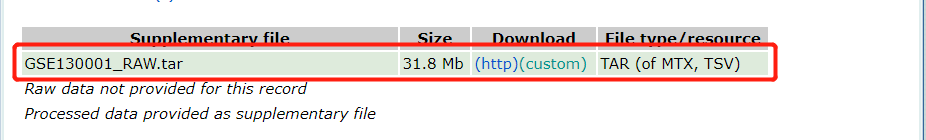
下载解压数据：
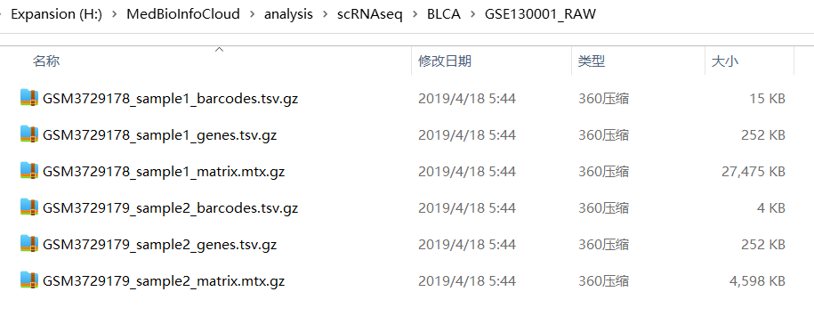
3.数据预处理¶
这里的数据是10X标准输出的3个文件，这三个文件指的是：barcodes.tsv, features.tsv, matrix.mtx。这个情况就比较好处理了，barcodes.tsv就是 cell id，features.tsv就是 gene id，matrix.mtx就是计数 counts 矩阵。但我们需要整理一下文件。因为文件名多了一些信息，需要为每个样本单独建立一个文件夹，然后将该样本3个文件对应的重命名一下就可以了。就如下面是一个样本重命名后的。
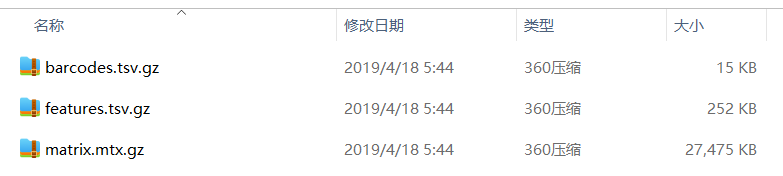
当然，可以用代码解决，需要注意文件路径。
###============1、准备原始分析数据
fs = list.files('./GSE130001_RAW/','^GSM')
library(stringr)
samples = str_split(fs,'_',simplify = T)[,1]
# x <- "GSM3729178"
lapply(unique(samples),function(x){
y = fs[grepl(x,fs)]
folder = paste0("GSE130001_RAW/", x)
dir.create(folder,recursive = T)#为每个样本创建子文件夹
#重命名文件，并移动到相应的子文件夹里,注意对应顺序
file.rename(paste0("GSE130001_RAW/",y[1]),file.path(folder,"barcodes.tsv.gz"))
file.rename(paste0("GSE130001_RAW/",y[2]),file.path(folder,"features.tsv.gz"))
file.rename(paste0("GSE130001_RAW/",y[3]),file.path(folder,"matrix.mtx.gz"))
})
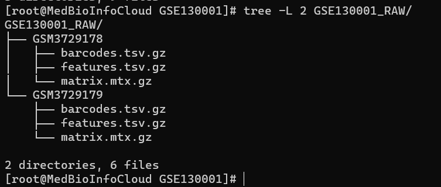
4.读入数据创建Seurat对象¶
5.数据质控¶
质控的目的是去除掉低质量的数据，包括破损或死亡的细胞、没捕获到细胞的empty droplet和捕获到2个以上细胞的doublets。一般低质量的细胞或者empty droplet通常含有很少的基因，而doublets容易测到更多的基因。另一方面，低质量或者死亡细胞会测到更多的线粒体基因表达的RNA。
过滤指标1:最少表达基因数的细胞&最少表达细胞数的基因
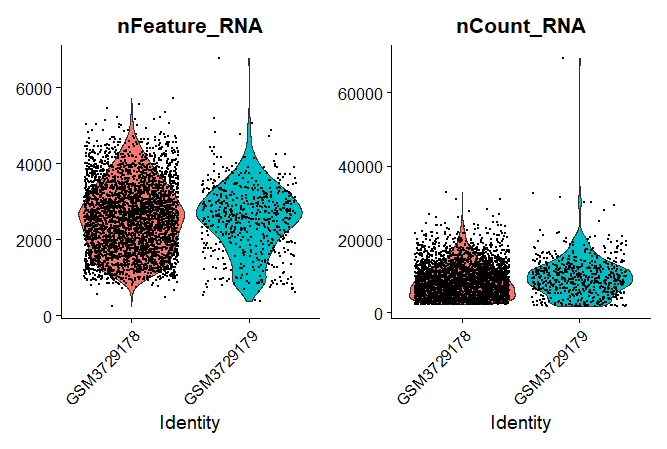
selected_cell <- WhichCells(sce.all, expression = nFeature_RNA > 300)
selected_features <- rownames(sce.all)[Matrix::rowSums(sce.all@assays$RNA@counts > 0 ) > 3]
sce.all.filt <- subset(sce.all,
features = selected_features,
cells = selected_cell)
dim(sce.all)
dim(sce.all.filt)
过滤后的基因和细胞数量
可以看到，主要是过滤了基因，其次才是细胞.
过滤指标2:线粒体/核糖体基因比例
首先查看一下相关基因，注意小鼠和人的基因大小写区别：
计算上述两类基因在所有细胞中的比例：
使用PercentageFeatureSet函数评估每个细胞中的线粒体表达比例：
上面的方法是修改 sce.all.filt[["percent.mt"]] ，下面我们演示 AddMetaData 函数，同样是可以增加线粒体基因含量信息到我们的seurat对象。
计算核糖体蛋白基因的比例：
可视化:
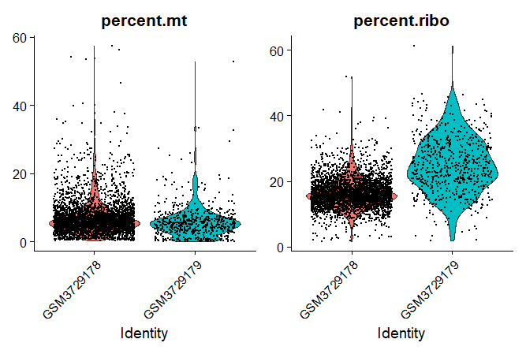
过滤：
有些研究可能需要过滤红细胞基因，下面是匹配红细胞基因，可以按照上面基因核糖体基因比例方式计算。这里不计算了。
官网教程这里要求基因数 200-2500，线粒体百分比为小于 5%，但实际情况还是要根据自己的数据来处理，先画图看异常值分布再调整数值。
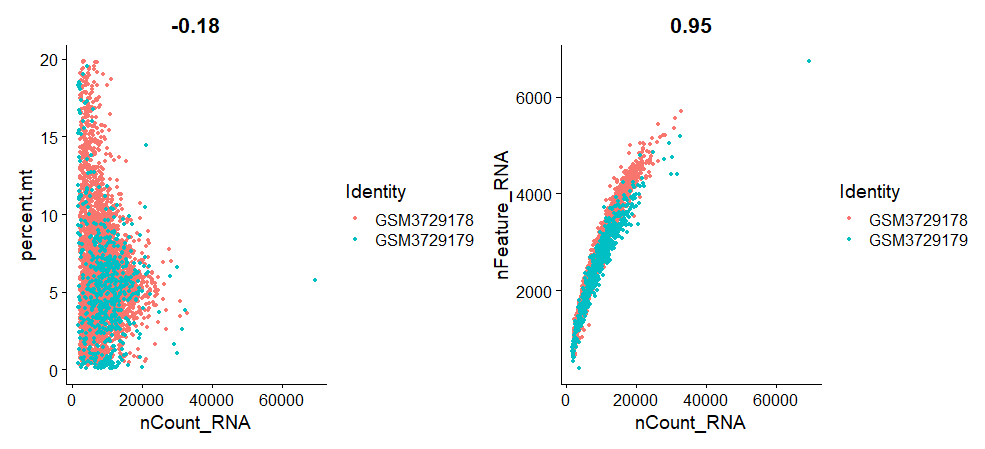
6.数据标准化¶
基因的表达矩阵需要经过标准化后才能进行后续的分析。使用NormalizeData函数进行标准化，normalization.method：标准化方法，可选项，
- logNormalize： log(每个细胞的特征counts/细胞count总数*scale.factor)
- CLR：中心化对数标准化
- RC：相对计数，计算公式同logNormalize，不取log，计算CPM表达量，设置scale.factor=1e6
可选择LogNormalize：
7.查找高变基因¶
指一些基因在细胞中表达的浮动比较大，这些往往是我们后续分群的时候需要关注的。FindVariableFeatures 函数有 3 种选择高表达变异基因的方法，可以通过 selection.method参数来选择，它们分别是：vst（默认值）， mean.var.plot (mvp) 和 dispersion (disp)。nfeatures 参数的默认值是 2000，可以改变。如果 selection.method 参数选择的是 mvp，就不需要人为规定高表达变异基因的数目，算法会自动选择合适的数目。建议使用完 FindVariableFeatures 函数后，用 VariableFeaturePlot 对这些高表达变异基因再做个可视化，看看使用默认值 2000 会不会有问题。
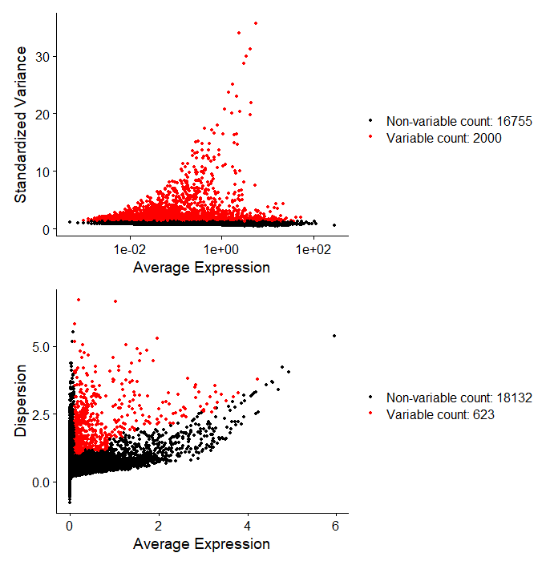
可以看到上面默认vst和mvp方法找到的高变基因数量差别还挺大的，这里我们用vst默认的结果继续吧。
可以使用LabelPoints函数显示部分基因名称：
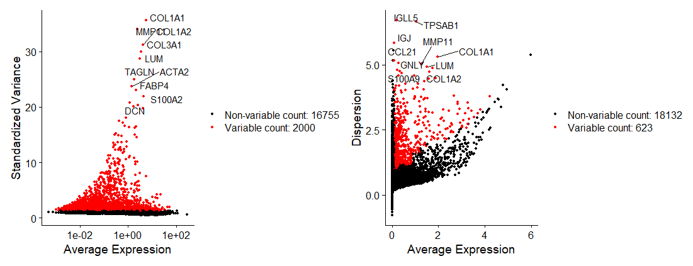
8.基因归一化¶
对所有的基因都做了scale，但是需要知道的是，其实后续的分析都是基于高变基因的，因此，使用默认参数就可以了。
# 这里设置对所有的基因都做了scale,但是需要知道的是，其实后续的分析都是基于高变基因的，因此，使用默认参数就可以了，而且提升效率
all.genes <- rownames(x = sce)
sce <- ScaleData(object = sce, features = all.genes) # 对所有基因做归一化处理
此外需要注意的是，ScaleData 可以用在去除细胞周期影响，利用 ScaleData 函数的 vars.to.regress 参数来消除细胞周期带来的变异。这里可以用到两种方法，一种方法是同时S.score 和 G2M.score，另一种方法是 regress out 两个score 的差。非必要步骤。
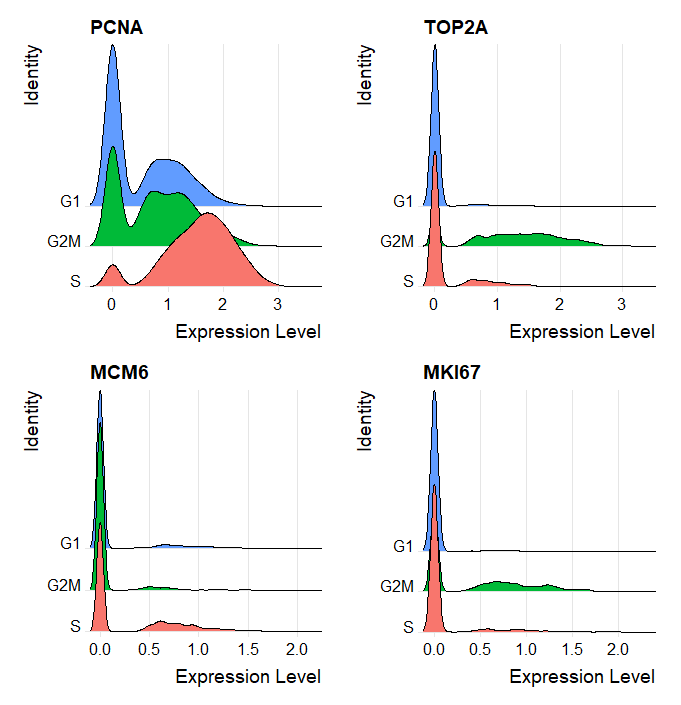
第一种方法完全去除了细胞周期的影响，而第二种方法则消除了 S 和 G2M 期的差别，为什么要这么做呢？因为对于某些样本来说，有的细胞类型处于休眠期，有的细胞类型处于增殖期，如果把所有细胞周期的影响都去除掉，会影响这两类细胞的鉴定。这时候，我们只要去除增殖期内部细胞周期的差异，保留增殖期和休眠期的差别就可以了。是否需要排除细胞周期的影响，看自己的研究是否需要。
9.降维聚类¶
sce <- RunPCA(object = sce, pc.genes = VariableFeatures(sce))
P5 <- DimPlot(object = sce , reduction = "pca")
P6 <- VizDimLoadings(sce, dims = 1:2, reduction = "pca")
P5 + P6
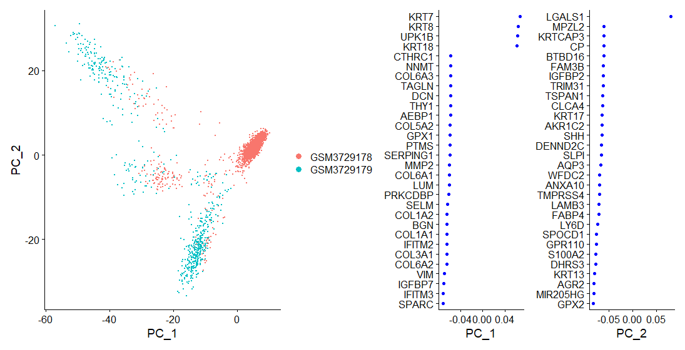
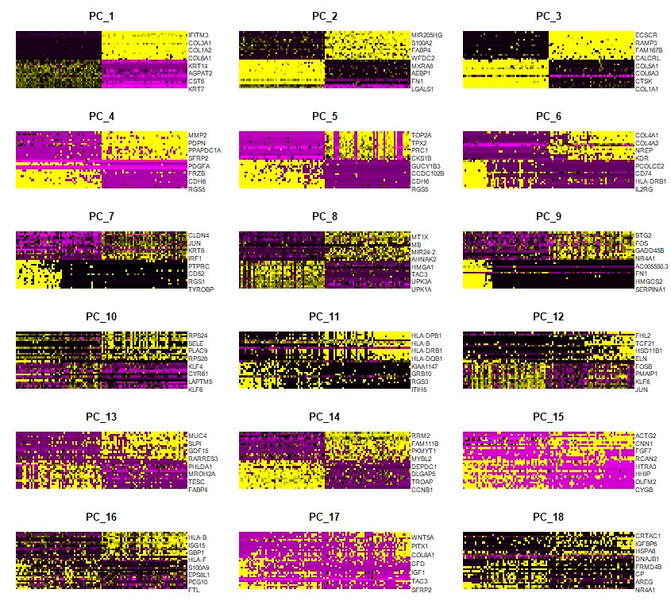
我们可以看到PC16之后的热图没有明显的色块，更像一个零散的马赛克，PC1-16可以解释的差异就比较好。还有其他的一些判断方法。也可以用ElbowPlot来估计，PC16后基于平稳。JackStrawPlot图虚线以上的为可用维度，也可以调整 dims 参数，画出所有 pca 查看，这个方法耗时比较久。
主成分个数大一点对结果影响不大，但少了影响很大。
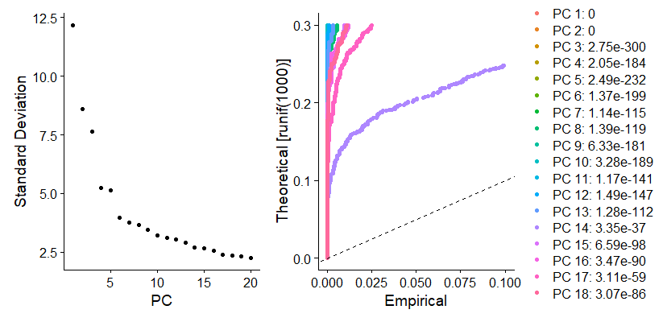
10.细胞聚类¶
在Seurat包中，对于单细胞数据先过滤，再标准化，再PCA降维，再聚类的过程，其中聚类就是先用KNN算法得到细胞的K个最近邻节点，(在图论聚类的过程中，KNN并不做分类器的功能，而是仅用于寻找每个细胞距离最近的k个细胞。此外，为了提高运算速度，降低背景噪音，主成分分析（PCA）会优先于KNN进行)，然后再用SNN算法对共享最近邻节点进一步加强细胞间的关系，(SNN是一种基于共享最近邻的聚类算法，它通过使用数据点间共享最近邻的个数作为相似度来处理密度不同的聚类问题，从而可以在含有噪音并且高维的数据集中发现各不相同的空间聚类。)
最后用Louvain算法对小簇进行模块划分，最终得到细胞亚群，并用tSNE/UMAP图进行可视化，使得细胞分群一目了然，这里的 dims 为上一步计算所用的维度数，而 resolution 参数控制聚类的数目，针对3K的细胞数目，最好的范围是0.4-1.2，默认是0.8。
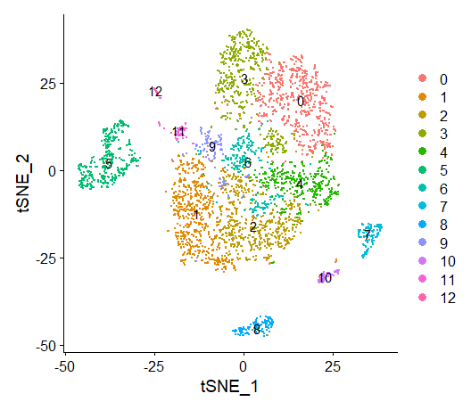
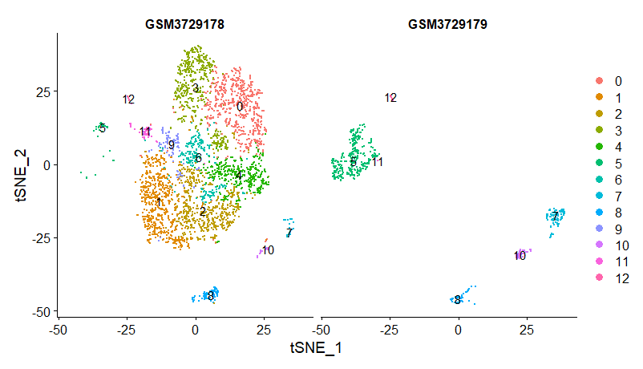
可以提取数据用ggplot2进行可视化：
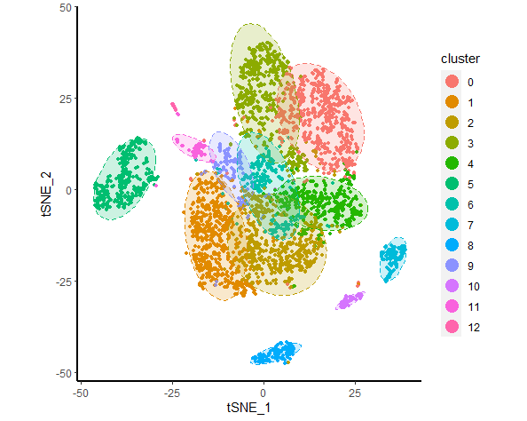
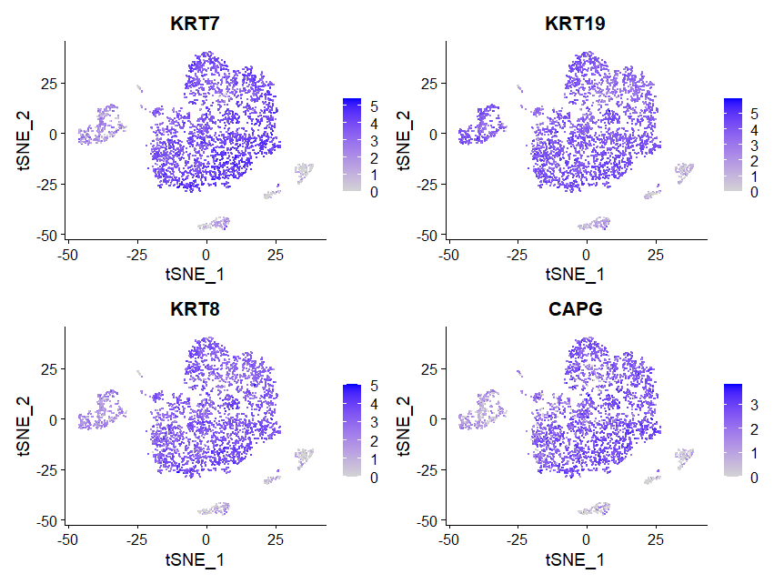
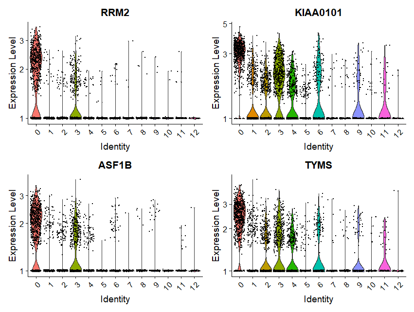
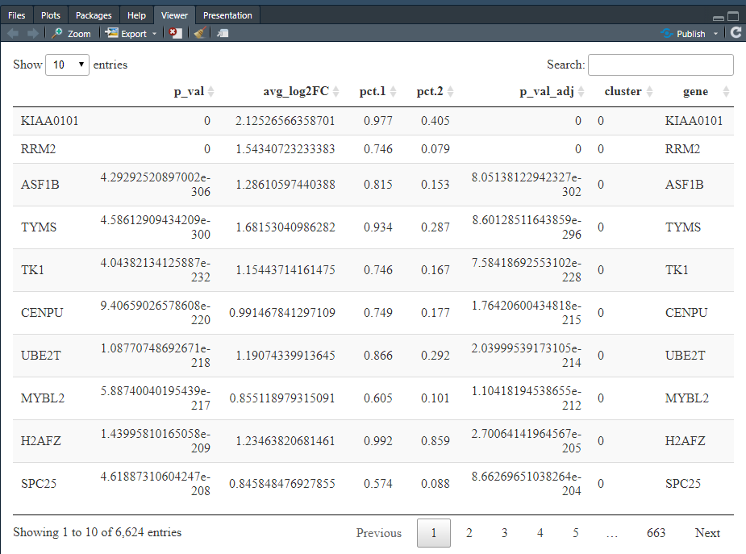
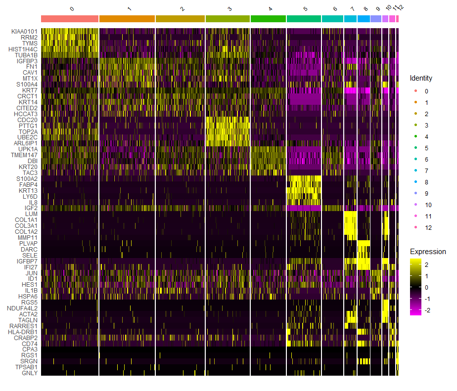
11.保存数据¶
保存数据用于后续进一步分析。